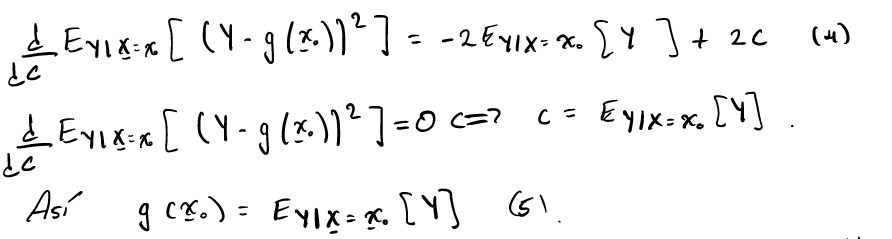

Sesión 3- 21 de Mayo de 2020
Juan David Ospina Arango
Profesor a cargo
Departamento de Ciencias de la Computación y de la Decisión
Universidad Nacional de Colombia
Sesión 3 - Introducción a los K Vecinos más cercanos
Técnica de clasificación y regresión:
1) Clasificación
Sea { ( X1 , Y1) , … , ( Xn , Yn) } una m.a donde Xi ϵ RP y Y i ϵ { C1, … ,CJ } =C
Ahora sea X m.a nueva observación cuya clase Y ϵ C
se desea predecir,
Primero se calculan las instancias de X a X1, … , Xn :
{ X, i = || X - Xi || , i=1, … , n }
Ahora se define E X , (1) = min i E X , i (La menor distancia)
E X , (2) = min i E X , i E X , (I) (La segunda menor distancia)
…
E X , (n) = max i E X , i (La mayor distancia)
Los K Vecinos más cercanos a X son los Xj que satisfacen || X –Xj || < E X , (K)
Referimos el clasificador de los K Vecinos más cercanos como
d: RP –>C
d( X ) –> arg max j Σ { yi = Cj }, donde || Xi – X || < E X , (K)
2) Regresión:
Es este caso Yi ϵ R
La función de regresión es:
Si X0 es un valor particular, entonces f (X0) es una aproximación de E [ Y | X = X0]
¿Qué es E [ Y| X = X0] ?
Sea ( Y, X ) una tupla de r.a con fdp conjunta f Y,X ( Y, X).
Dado X = X0 , queremos aproximar Y por g ( X ), con g: RP à R.
El costo cuadrado de g es
En la expresión azul, X está fija y Y es la variable de integración. Cuando X está fija entonces
f (Y, X) = f Y|X = X (y) fx (X).
Recordemos que la fdp condicional de Y dado X = X0 es
es una función solo de y. Así

La formula (2) indica que para minimizar el costo cuadrático de g() se puede hacer la minimización condicionado sobre X y luego tomando la esperanza con respecto a X:
Para minimizar esta expresión con respecto a C, derivamos con respecto a C e igualamos la derivada a O:

Si se reemplaza (5) en (2) se obtiene la pérdida cuadrática de g:
Por otro lado el MSE o Pérdida Cuadrática del estimador (4) del parámetro δ es:
Esto quiere decir que el MSE de g() se puede ver como:
datos <- read.csv2("real_estate_valuation_dataset.csv")head(datos)## ï..No X1 X2 X3 X4 X5 X6 Y
## 1 1 2012.917 32.0 84.87882 10 24.98298 121.5402 37.9
## 2 2 2012.917 19.5 306.59470 9 24.98034 121.5395 42.2
## 3 3 2013.583 13.3 561.98450 5 24.98746 121.5439 47.3
## 4 4 2013.500 13.3 561.98450 5 24.98746 121.5439 54.8
## 5 5 2012.833 5.0 390.56840 5 24.97937 121.5425 43.1
## 6 6 2012.667 7.1 2175.03000 3 24.96305 121.5125 32.1datos_an<-subset(datos,select = c("X2","X3","X4","Y"))
head(datos_an)## X2 X3 X4 Y
## 1 32.0 84.87882 10 37.9
## 2 19.5 306.59470 9 42.2
## 3 13.3 561.98450 5 47.3
## 4 13.3 561.98450 5 54.8
## 5 5.0 390.56840 5 43.1
## 6 7.1 2175.03000 3 32.1summary(datos_an)## X2 X3 X4 Y
## Min. : 0.000 Min. : 23.38 Min. : 0.000 Min. : 7.60
## 1st Qu.: 9.025 1st Qu.: 289.32 1st Qu.: 1.000 1st Qu.: 27.70
## Median :16.100 Median : 492.23 Median : 4.000 Median : 38.45
## Mean :17.713 Mean :1083.89 Mean : 4.094 Mean : 37.98
## 3rd Qu.:28.150 3rd Qu.:1454.28 3rd Qu.: 6.000 3rd Qu.: 46.60
## Max. :43.800 Max. :6488.02 Max. :10.000 Max. :117.50- X2: edad de la casa
- X3: distancia al MRT
- X4: número de comercios alrededor
pairs(datos_an)
plot(datos_an$X3,datos_an$Y,log="xy")Programa para hacer el clasificador de los K vecinos más cercanos:
fknn=function(x,k,X0,Y0){
# a) encontrar todas las distancias
# D<-rbind(x,X0) # op1
# distancias<-dist(D) # op1
# distancias<-as.matrix(distancias)[1,-1] # op1
# Tarea: evaluar el desempeño (en tiempo) de ambas opciones
distancias<-apply(X0,1,function(y,x){sqrt(sum((x-y)^2))},x=x) #op2
# b) ordenar las distancias
orden<-sort(distancias,index.return=TRUE)
knn_ix<-orden$ix[1:k]
# c) calcular la respuesta como el promedio
Y_pred<-mean(Y0[knn_ix])
return(Y_pred)
# Y_pred<-mean(Y[orden$ix[1:k]]) # Mala práctica
}Encontremos el K óptimo:
set.seed(20200521)
p_vl<-0.2
N<-dim(datos_an)[1]
ix_vl<-sample(N,round(0.2*N),replace = FALSE)
X_tr<-datos_an[-ix_vl,1:3]
X_vl<-datos_an[ix_vl,1:3]
Y_tr<-datos_an$Y[-ix_vl]
Y_vl<-datos_an$Y[ix_vl]Y_pred_k<-apply(X_vl,1,fknn,k=2,X0=X_tr,Y0=Y_tr)(perdida_k_vl<-mean((Y_vl-Y_pred_k)^2))## [1] 47.6269mse_fn=function(k,X0,Y0,X1,Y1){
# Esta función calcula el mse para el método KNN datos
# unos conjuntos de entrenamiento, validación
# y un valor específico de k
# k: número de vecinos
# X0: datos de entrenamiento (covariables)
# Y0: datos de entrenamiento (respuesta)
# X1: datos de validación (covariables)
# Y1: datos de validación (respuesta)
Y_pred_k<-apply(X1,1,fknn,k=k,X0=X0,Y0=Y0)
perdida_k_vl<-mean((Y1-Y_pred_k)^2)
return(perdida_k_vl)
}(mse_fn(k=2,X0=X_tr,Y0=Y_tr,X1=X_vl,Y1=Y_vl))## [1] 47.6269MSE_k<-sapply(1:20,FUN=mse_fn,X0=X_tr,Y0=Y_tr,X1=X_vl,Y1=Y_vl,simplify = TRUE)plot(1:20,MSE_k,type="h",las=1,xlab="K: número de vecinos",ylab = "MSE")